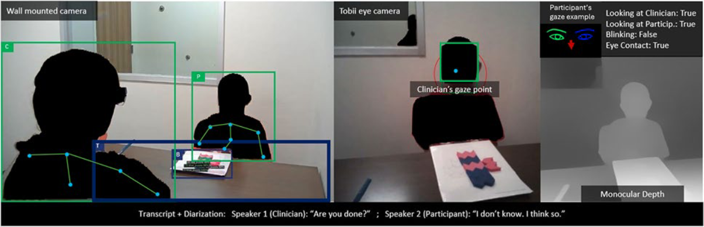
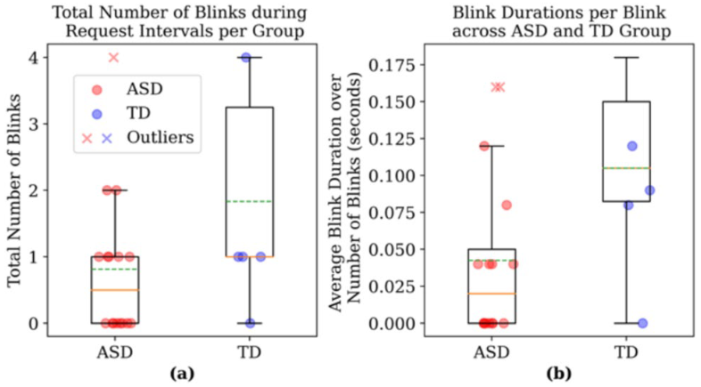

Bruno Carlos Dos Santos Melício, Kaan Karakose, Ádám Fodor, Linyun Xiang, Viktor Varga, Latha Soorya, Emily Dillon, Peter Kun, Andras Sárkány, Mohamed Chetouani, Kristian Fenech and András Lőrincz

The rising prevalence of autism spectrum disorder, coupled with limited professional resources, highlights the urgency of developing efficient diagnostic tools. While standardized assessments exist, identifying subtle communication deficits, especially during multimodal interactions, remains time-consuming and prone to human error. To address this, we propose an automated behavior analysis framework that aims to support clinicians by accurately detecting both verbal and non-verbal communication markers. Specifically, we put forth a composite artificial intelligence framework that integrates various deep learning algorithms to analyze information from body and hand poses, object detection, tracking and manipulation, and speech. By combining these features with a rule-based system, we can identify events within the Autism Diagnostic Observation Schedule second edition, Construction Task, where participants initiate requests. These requests can be verbal, non-verbal or a combination of both resulting in multimodal interactions. Building on our prior work, this paper introduces a smart glass technology component, integrating gaze and blinking analysis, which are challenging for clinicians to monitor, given the multi-task nature of their role. These additions enable the detection of eye contact, a crucial social cue. Our approach allows us to recognize gestures, identify hand object manipulations, detect eye contact, and understand the natural language in clinician-participant interactions. We achieve 94% and 73% F-1 score, on verbal and non-verbal request detection, respectively, which may improve, as deep learning advances.
a) Box plot for total number of blinks per group, alongside the
data points. Eight out of 16 ASD and 5 out of 6 TD participants were
blinking. An outlier can be observed among the ASD participants.
b) Box plot for average blink duration over number of blinks per group,
alongside the data points. Outliers can be observed among the ASD
participants.
